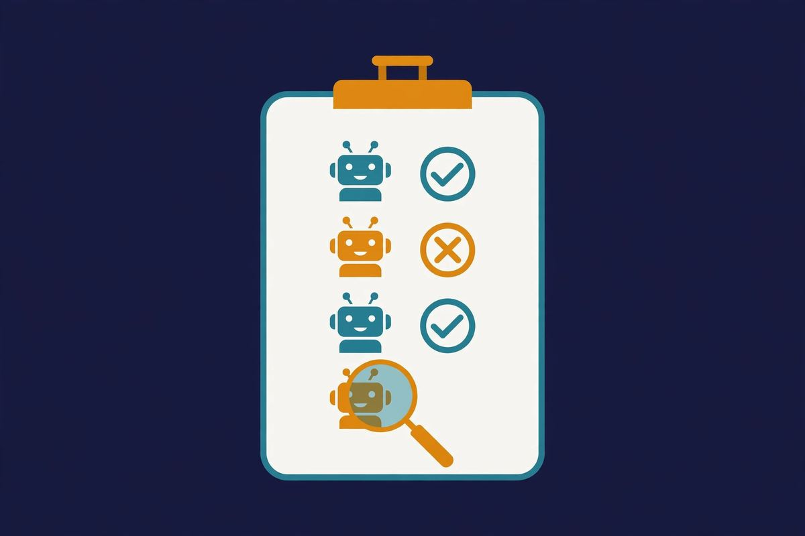

Free AI Chatbot No Sign Up: I Tested 12, 7 Actually Work
Looking for a free AI chatbot with no sign up? You're not alone — and you're right to be skeptical. "No sign-up required" is the most lied-about phrase on the internet. Half the tools that claim it hit you with a login wall the moment you try anything useful. So I opened 12 AI chatbots that advertise no-signup access and actually used each one: no account, no email, no tricks, no incognito-mode loopholes.
Why does this matter? Because signup friction is where free AI goes to die. You find a promising chatbot, click through, and land on "create your free account." Then it's email verification, then a password, then "tell us about your team." By the time you're in, you've forgotten what you wanted to ask. A genuinely account-free chatbot respects a simple deal: open the page, type, get an answer.
This test exists because our no-signup directory lists only tools we've personally verified — and verification means doing exactly what I did here. Below is the full methodology, the 7 chatbots that passed, the 5 that failed, and a quick comparison so you can pick in 30 seconds.
How I tested
I ran every chatbot through the same three checks, in a fresh browser session with no logged-in accounts anywhere:
- Front door test: can I get a real, complete answer without creating any account, verifying any email, or installing anything?
- Usefulness test: is the free tier actually usable for real work, or a 2-message demo that funnels you to signup? I held at least a 5-message conversation with each one.
- Honesty test: does it stay account-free throughout, or does the wall appear mid-session — the classic "3 free messages, then register" trick?
I also noted model quality, speed, and any privacy posture worth mentioning. I did not test NSFW or character-roleplay chatbots — different category, different article.
The 7 free AI chatbots with no sign up that passed
Ordered by how likely I am to actually keep using them — not alphabetically, not by who paid (nobody paid; there are no sponsored placements on this site).
1. Duck.ai — the daily driver
DuckDuckGo's AI chat is the closest thing to a no-brainer in this list. Open duck.ai, pick a model — GPT, Claude, Llama, or Mistral — and start typing. There is no account to create; the product is designed around anonymity, with your IP stripped before prompts reach providers.
In testing, answers were fast and the model switcher actually works — I asked the same question across GPT and Claude back to back with zero friction. The tradeoff is a daily usage cap that's never published precisely, and no conversation history (which is the point, privacy-wise). If you want one bookmark for "just chat with AI, no account," this is it. Read our full Duck.ai review.
2. LMArena — the most honest way to compare models
LMArena (formerly Chatbot Arena) shows you two anonymous frontier models answering side by side, and you vote for the better response. Completely account-free, no email, no limits that I hit in testing. It's the project behind the famous LLM leaderboard, so the models are genuinely cutting-edge.
Why it's on a "free chatbot" list: because it's the fastest way to answer "which AI is actually best right now" without signing up for five services. Slightly addictive. The only downside is you don't choose the models — that's the blind-test design, not a bug.
3. Venice.ai — private by default
Venice runs stateless by default: nothing is saved unless you explicitly opt in. Core chat needs no signup, and the privacy posture is the strongest in this test — no account means no profile to build. In my session, responses were solid for general chat and writing help, with a slightly uncensored-leaning model selection.
Caveats: the interface is a touch rougher than Duck.ai's, and heavy users will eventually hit prompts to register for higher limits. But the free, account-free tier is real and usable, not a teaser.
4. Perchance — unlimited and unpretentious
Perchance is one of the last truly unlimited, account-free AI platforms — chat and image generation, ad-supported, zero barriers. I chatted for twenty minutes and generated a dozen images without a single prompt to register. That almost never happens anymore.
The models aren't frontier-tier, and the ad-supported experience is visibly scrappier than the polished alternatives. But for casual chat, brainstorming, and endless image experiments at zero cost and zero commitment, the value proposition is unbeatable. This is the "just mess around with AI" pick. Read our full Perchance AI review.
5. Pollinations.ai — the API that happens to have a website
Pollinations offers free text and image generation with no key and no account — it's the engine behind countless demos and side projects. The web UI is simple: type a prompt, get an image or text. I ran a full batch of test prompts without hitting any wall.
For non-developers it's a decent free image generator. For developers, the real product is the API itself — see our free APIs page. Either way, the no-signup claim held up completely in testing.
6. Wsup.ai — the lightweight surprise
A smaller, browser-based anonymous chat I almost skipped. Glad I didn't: open the page, type, get answers. No onboarding of any kind — the whole "signup flow" is the absence of one. Responses were quick for a small service, perfectly fine for everyday questions.
The honest caveat: smaller services can have availability hiccups, and there's less public information about who's behind it. For quick questions with zero ceremony, though, it passed every check I threw at it.
7. Andi — search-flavored chat
Andi blends search and chat: ask a question, get an AI answer with sources. No account needed for core use. It occupies a different niche than the pure chatbots above — closer to "AI search without login" — which is why it rounds out the list rather than competing with Duck.ai directly.
Best for research-style questions where you want citations, not just prose. Not the deepest conversationalist in the test, but the most useful when you need to verify something.
Quick comparison
| Chatbot | Best for | Limits | Privacy note |
|---|---|---|---|
| Duck.ai | Everyday private chat | Unpublished daily cap | IP stripped, no history |
| LMArena | Comparing models | None hit in testing | Anonymous by design |
| Venice.ai | Private long-form chat | Prompts to register at high use | Stateless by default |
| Perchance | Casual chat + images | Ad-supported | Standard |
| Pollinations.ai | Images + API experiments | Rate limits | Standard |
| Wsup.ai | Quick questions | Small service, varies | Anonymous |
| Andi | Research with sources | Search-focused | Standard |

The 5 that failed (or half-failed)
I'm not naming every disappointment — some are moving targets and naming them gives them SEO juice they haven't earned. But the failure patterns are worth knowing, because you'll recognize them everywhere:
- The bait-and-switch (2 of the 5): works beautifully for exactly 3 messages, then "create a free account to continue." That's not a no-signup chatbot, that's a free trial wearing a costume. Instant fail.
- The crippleware (2 of the 5): technically no account required, but the free tier is so throttled — one slow model, tiny context window, long queues — that it's a demo, not a tool. Technically honest, practically useless.
- The moving wall (1 of the 5): genuinely account-free when I first checked it weeks ago; signup wall appeared on retest. This is why "last verified" dates matter — see the directory, which we re-check regularly.
The lesson: "no sign up" on a landing page means nothing until you've typed five messages. Marketing copy is free; verification isn't.
FAQ
Are these free AI chatbots really free with no sign up?
Yes — each of the 7 above was opened in a fresh browser session and used with no account, no email, and no payment method. That's the entire premise of this test and of our directory.
What's the catch with no-signup AI chatbots?
Usually one of three: usage caps (fair), ads (fair), or weaker models than the paid tier (fair). What's not fair is the bait-and-switch — working fine until message 4, then demanding registration. Everything in the "passed" list avoids that.
Is it safe to use an AI chatbot without an account?
No account means no profile, which is good for privacy — but the service can still see your IP and your prompts. Don't paste passwords, private documents, or anything you wouldn't post publicly into any free AI tool, signed up or not.
Which no-signup chatbot is best for coding help?
For quick code questions, Duck.ai (switch to the strongest available model) or Venice.ai. For serious coding work, you'll eventually want a dedicated tool — the account-free tier is for trying and for light tasks, not for a 4-hour debugging session.
Do these work on mobile?
All 7 work in a mobile browser with no app install. Duck.ai and Perchance in particular are perfectly usable on a phone — fitting, since this site's philosophy is "tap and go."
The takeaway
Genuinely account-free AI chat still exists, but it's shrinking — every year, another "no signup" tool adds a registration wall. The 7 above all passed the front-door test today. Bookmark this page and the directory, because the list changes, and we re-verify. More of a visual person? We ran the same kind of hands-on test on 5 no-signup AI image generators.
If you found this useful, the fastest way to browse everything in one place is still the directory — and if a listed tool ever asks you for an account, tell us and we'll re-test it.
Tested 2026-10-11 · Providers change their signup policies — we re-verify regularly.